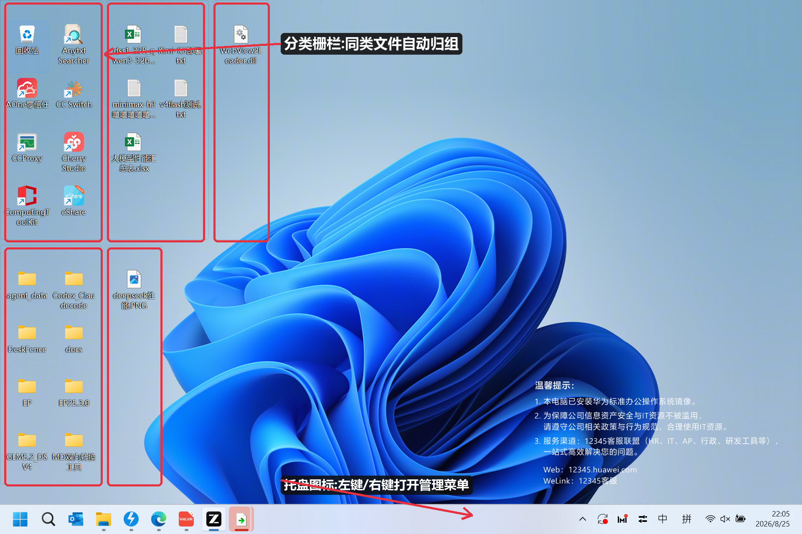
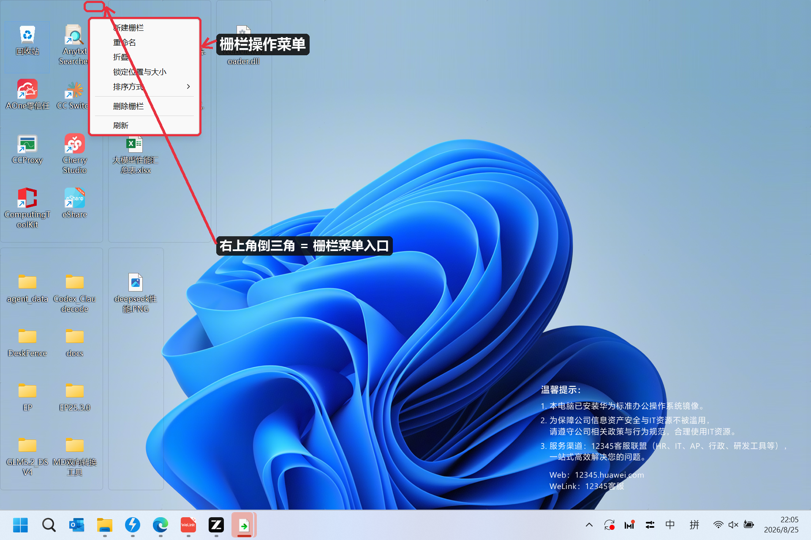
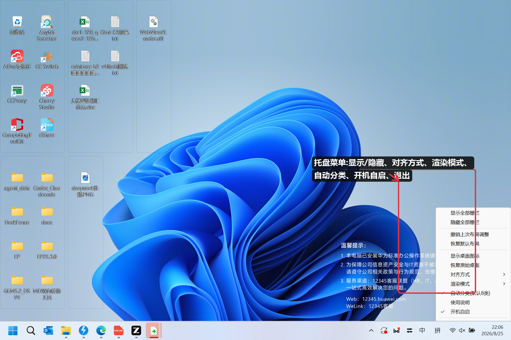
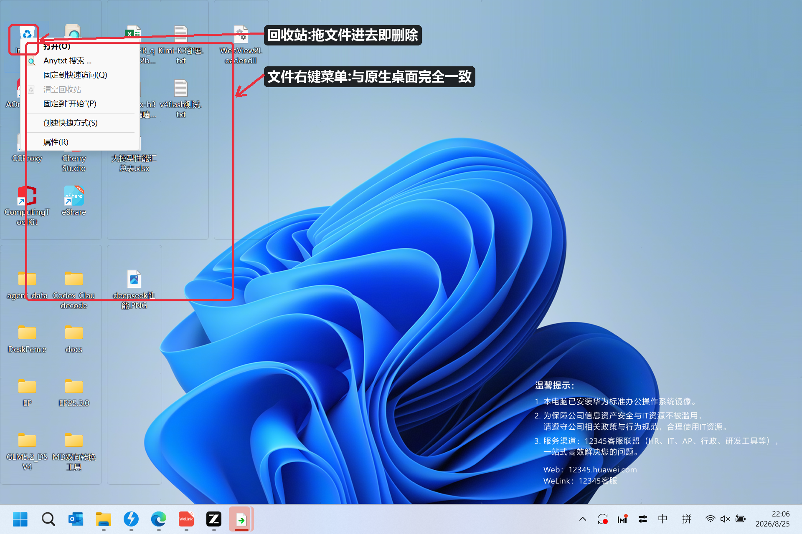
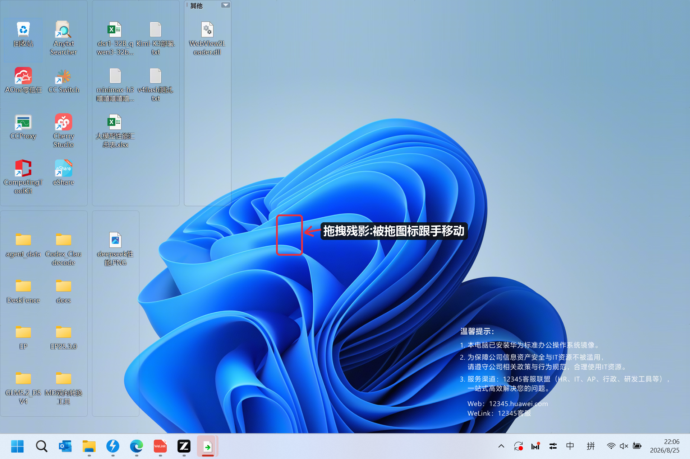
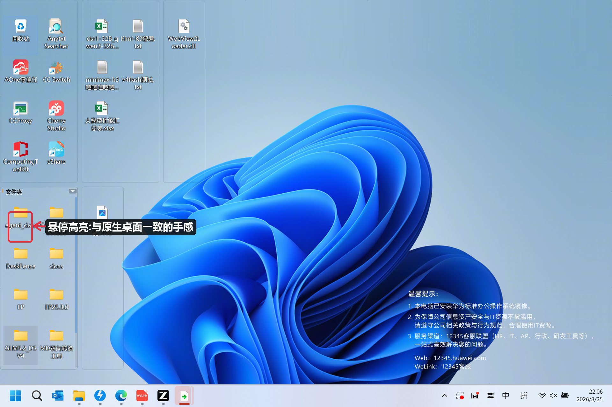

DeskFence 将桌面文件按类型自动归入透明栅栏分区。图标与文字和原生桌面像素级一致,启动秒级接管,关掉它桌面立刻还原——像给桌面请了一位看不见的整理师。

我们不改变你的桌面,我们只是让它井井有条。
软件、文件夹、文档、图片、媒体、代码、压缩包、其他——新文件落桌面即自动归位,8 大类永久保持整齐。
图标提取、ClearType 文字渲染、悬停高亮全部与 Windows 原生桌面逐像素一致,不用就没有"换了桌面"的感觉。
启动并行预热,首帧即最终画面;换壁纸毫秒级跟随。全程无闪屏、无中间态。
拖动图标即现跟手残影与插入线,松手完成排序;拖到别的栅栏即转移分类,拖到回收站即删除。
不联网、不上传、无广告无弹窗。原生 Rust 单文件实现,内存占用低至 100 MB 级。
退出或卸载即刻恢复原生桌面,图标位置、文件本身分毫未动;异常崩溃下次启动也会自动恢复。
每一处交互都为"和原生一样"而设计。

每个栅栏右上角的倒三角是它的"管理中心"。
任务栏托盘图标(左键或右键)打开全局菜单,所有系统级设置都在这里。


右键栅栏里的文件,打开、复制、删除、重命名、属性……与原生桌面完全同源,第三方扩展菜单同样可用。
从安装到进阶,5 分钟全部掌握。
无需安装,双击即用。
deskfence.exe,约 1 秒后桌面自动完成整理——原生散落的图标消失,取而代之的是按类型分好的栅栏。默认模式,开箱即用。
桌面文件按类型自动进入对应栅栏,某类栅栏不存在时会在该类第一个文件出现时自动创建:
| 栅栏 | 收集的文件类型 |
|---|---|
| 🖥 软件 | exe / msi / lnk / bat 等程序与快捷方式 |
| 📁 文件夹 | 所有目录 |
| 📄 文档 | txt / md / Office / PDF 等 |
| 🖼 图片 | jpg / png / gif / svg 等 |
| 🎬 媒体 | mp3 / wav / mp4 / mkv 等音视频 |
| 💻 代码 | py / js / ts / rs / go / c / cpp / html / json 等 |
| 📦 压缩包 | zip / rar / 7z / tar / gz 等 |
| ❓ 其他 | 以上未覆盖的类型 |
被拖的图标跟手移动,其他图标纹丝不动,松手才重排。


所有操作与原生桌面同源。
点栅栏右上角的「倒三角」打开管理菜单。
任务栏右下角托盘图标,左键或右键均可打开。
| 菜单项 | 作用 |
|---|---|
| 显示 / 隐藏全部栅栏 | 一键在"整理桌面"与"原生桌面"间切换(Win+D 后也能自动恢复) |
| 撤销上次布局调整 | 还原最近一次移动 / 重排 |
| 恢复默认布局 | 栅栏回到初始的自动排布 |
| 对齐方式 | 自动对齐(固定间隔,推荐)/ 网格对齐(图标格倍数)/ 自由移动(栅栏任意摆放不受限) |
| 渲染模式 | 精确(默认,与原生逐像素一致)/ 透明(使用动态壁纸软件时选这个) |
| 自动分类(默认 8 类) | 勾选=按类型自动归类;取消=自定义分类模式 |
| 开机自启 | 随 Windows 启动 |
| 退出 | 恢复原生桌面并退出程序 |
DeskFence 只"接管显示",从不移动或修改你的文件。
deskfence.exe --restore-desktop 一键自救。%APPDATA%\DeskFence\,删除该文件夹即完全清除痕迹。并行预热 + 首帧即最终帧
图标/ClearType 文字与原生逐像素比对
纯本地运行,无遥测无广告
原生 Rust,无需运行时依赖
不会。DeskFence 只接管"图标的显示方式",文件本身始终留在桌面目录原位。退出即恢复原生桌面,位置都不变。
程序可能已在后台运行(单实例)。再双击一次会唤醒它显示全部栅栏;或检查任务栏托盘是否已有 DeskFence 图标。
DeskFence 追求"无感":图标和文字与原生桌面像素级一致、启动无中间态、退出零残留,并且完全免费、纯本地、无任何订阅。
支持。每个显示器的桌面区域都会被接管,栅栏可在各屏之间自由摆放。
图标像素有缓存,文件变更只增量刷新;稳态下每秒只做一次轻量自检。几百个文件的桌面依然流畅。